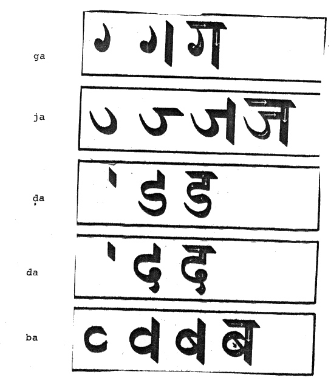

mailto:payer@payer.de
Zitierweise | cite as:
Payer, Alois <1944 - >: Sanskritkurs. -- Devanāgarī = देवनागरी. -- 2. Schriftübung 2. -- Fassung vom 2008-11-17. -- URL: http://www.payer.de/sanskritkurs/schrift02.htm
Erstmals hier publiziert: 2008-11-17
Anlass: Lehrveranstaltungen 1980 - 1984
©opyright: Dieser Text steht der Allgemeinheit zur Verfügung. Eine Verwertung in Publikationen, die über übliche Zitate hinausgeht, bedarf der ausdrücklichen Genehmigung des Verfassers
Dieser Text ist Teil der Abteilung Sanskrit von Tüpfli's Global Village Library
Falls Sie die diakritischen Zeichen nicht dargestellt bekommen, installieren Sie eine Schrift mit Diakritika wie z.B. Tahoma.
Die Devanāgarī-Zeichen sind in Unicode kodiert. Sie benötigen also eine Unicode-Devanāgarī-Schrift.

A) Schreiben Sie in Devanāgarī:
jagat dā dīpikā pāda pīḍ ḍī bata jāti jāgṛ jṝ gato gati gadā gajo gai gopī ḍāka ḍoḍa dadṛt bako baṭuko bad
B) Lesen und transliterieren Sie:
गजो गति जपति डप् दा ददाति जगती जटा जड बीज बृबु चिद् कदा तदा दीपितो जजति
Zu Lektion 3